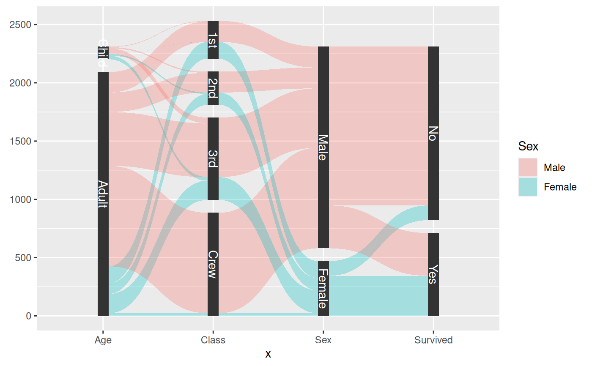

A parallel sets diagram is a type of visualisation showing the interaction between multiple categorical variables. If the variables has an intrinsic order the representation can be thought of as a Sankey Diagram. If each variable is a point in time it will resemble an alluvial diagram.
stat_parallel_sets( mapping = NULL, data = NULL, geom = "shape", position = "identity", n = 100, strength = 0.5, sep = 0.05, axis.width = 0, na.rm = FALSE, show.legend = NA, inherit.aes = TRUE, ... ) geom_parallel_sets( mapping = NULL, data = NULL, stat = "parallel_sets", position = "identity", n = 100, na.rm = FALSE, sep = 0.05, strength = 0.5, axis.width = 0, show.legend = NA, inherit.aes = TRUE, ... ) stat_parallel_sets_axes( mapping = NULL, data = NULL, geom = "parallel_sets_axes", position = "identity", sep = 0.05, axis.width = 0, na.rm = FALSE, show.legend = NA, inherit.aes = TRUE, ... ) geom_parallel_sets_axes( mapping = NULL, data = NULL, stat = "parallel_sets_axes", position = "identity", na.rm = FALSE, show.legend = NA, inherit.aes = TRUE, ... ) geom_parallel_sets_labels( mapping = NULL, data = NULL, stat = "parallel_sets_axes", angle = -90, position = "identity", na.rm = FALSE, show.legend = NA, inherit.aes = TRUE, ... )
| mapping | Set of aesthetic mappings created by |
|---|---|
| data | The data to be displayed in this layer. There are three options: If A A |
| geom | The geometric object to use display the data |
| position | Position adjustment, either as a string, or the result of a call to a position adjustment function. |
| n | The number of points to create for each of the bounding diagonals |
| strength | The proportion to move the control point along the x-axis towards the other end of the bezier curve |
| sep | The proportional separation between categories within a variable |
| axis.width | The width of the area around each variable axis |
| na.rm | If |
| show.legend | logical. Should this layer be included in the legends?
|
| inherit.aes | If |
| ... | Other arguments passed on to |
| stat | The statistical transformation to use on the data for this layer, as a string. |
| angle | The angle of the axis label text |
In a parallel sets visualization each categorical variable will be assigned
a position on the x-axis. The size of the intersection of categories from
neighboring variables are then shown as thick diagonals, scaled by the sum of
elements shared between the two categories. The natural data representation
for such as plot is to have each categorical variable in a separate column
and then have a column giving the amount/magnitude of the combination of
levels in the row. This representation is unfortunately not fitting for the
ggplot2 API which needs every position encoding in the same column. To make
it easier to work with ggforce provides a helper gather_set_data(), which
takes care of the transformation.
geom_parallel_sets understand the following aesthetics (required aesthetics are in bold):
x
id
split
value
color
fill
size
linetype
alpha
lineend
Thomas Lin Pedersen
data <- reshape2::melt(Titanic) data <- gather_set_data(data, 1:4) ggplot(data, aes(x, id = id, split = y, value = value)) + geom_parallel_sets(aes(fill = Sex), alpha = 0.3, axis.width = 0.1) + geom_parallel_sets_axes(axis.width = 0.1) + geom_parallel_sets_labels(colour = 'white')